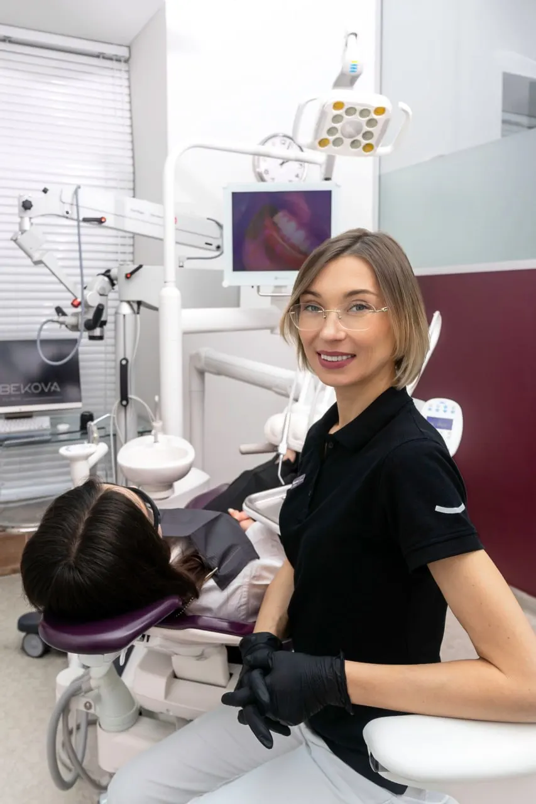
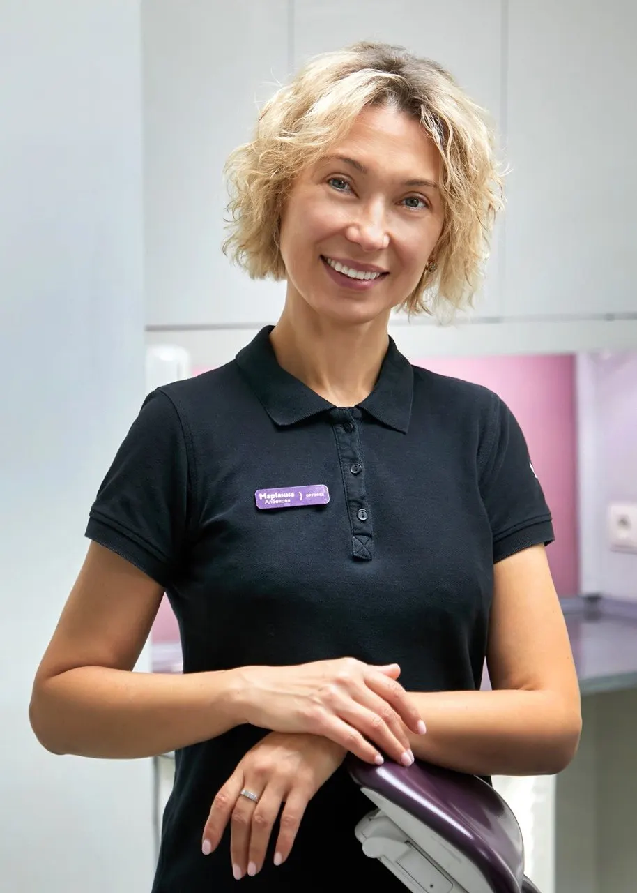

17 років досвіду
тисячі вилікуваних зубів різної складності

Albekova Dental Clinic, Львів
Імплантація та протезування зубів у Львові. 17 років досвіду, лікування під мікроскопом, гарантія від 5 років. Ми проведемо вас через кожен крок — спокійно, без болю, до результату, який триматиметься роками.
Консультація головної лікарки: огляд під мікроскопом, сканування, фотопротокол і план лікування з кошторисом.
Переваги
тисячі вилікуваних зубів різної складності
точність на кожному етапі
інтраоральний сканер замість неприємних зліпків
на імпланти та ортопедичні роботи
Знайоме відчуття
ви прикриваєте рот рукою, коли смієтеся
уникаєте фотографуватися або просите «не знизу»
соромитеся усмішки на зустрічах, побаченнях, із близькими
носите знімний протез і втомилися від дискомфорту
втратили зуб і відкладаєте рішення вже не перший місяць
боїтеся стоматолога, але розумієте, що далі відкладати не варто
Усмішка впливає на те, як ви говорите, фотографуєтеся, спілкуєтеся — на щоденну впевненість у собі. Ми повертаємо не лише зуби, а й свободу усміхатися. І вам не потрібно знати, який імплант чи коронка вам підходять — це наша робота. Ваша — просто прийти на консультацію.
Чесно про страхи
Більшість наших пацієнтів приходять зі страхом. Ми розуміємо кожен із них — і ось як усе є насправді.
Працюємо під надійною анестезією, спокійно й без поспіху. Ви весь час розумієте, що відбувається, і можете зупинити процес у будь-який момент.
Імплантація планується заздалегідь і проходить як передбачувана мала процедура. Для тривожних пацієнтів доступна седація.
Найбільший набряк зазвичай до 3 дня, далі поступово спадає до 7 дня. Ми даємо чіткі рекомендації й супроводжуємо вас у відновленні.
Ми не оцінюємо і не соромимо. Наша задача не судити, а спокійно допомогти вам пройти лікування.
Ми працюємо з перевіреними системами імплантів, даємо гарантію і заздалегідь погоджуємо план та кошторис.
Напрями лікування
Відновлення втрачених зубів за допомогою імплантів. Вони виглядають, відчуваються й працюють як власні зуби — і служать десятиліттями.
Коли потрібно відновити форму, естетику й впевненість у своїй усмішці. Працюємо за цифровим протоколом: точно, передбачувано, без зайвих візитів.
Дорожня карта
Ви завжди знаєте, що далі. Жодних сюрпризів — ми проводимо вас через кожен етап.
Перший контакт
Форма на сайті або дзвінок. Ні до чого не зобов'язує — це просто спокійний перший крок без тиску.
Організація
Відповідаємо на запитання, підбираємо час і пояснюємо, як усе проходитиме. Ви заздалегідь розумієте сценарій.
Діагностика
Огляд під мікроскопом, інтраоральне сканування й фотопротокол — без здогадок, лише чітка діагностика.
План
Ви заздалегідь бачите варіанти, етапи й вартість. Ніяких несподіваних рішень посеред процесу.
Лікування
Імплантація та протезування проходять послідовно, з сучасним обладнанням і чітким супроводом на кожному кроці.
Фінал
Природна усмішка, комфорт при жуванні та відчуття, що ви знову можете усміхатися без внутрішньої напруги.
Супровід
Гарантія від 5 років і контакт із клінікою після завершення — ви не залишаєтеся самі після фінального візиту.

Головна лікарка
Понад 20 років у стоматології. Спеціалізуюся на протезуванні на імплантах, вінірах і накладках. Веду пацієнта особисто — від першого огляду до фінального результату.
Я переконана: лікар і пацієнт — на одному боці. Моя робота — провести вас через складний шлях спокійно, у комфорті й довірі. Без болю. Без страху. З турботою.
До / після
Три реальні кейси до/після. Тільки зуби, без облич.
Відгуки
Прозора вартість
Ви заздалегідь розумієте діапазон вартості й що саме входить у лікування.
від 800 €
Neodent — 800 €, BioHorizons — 900 €.
10 800 грн
Коронка на імпланті — 12 800 грн.
Точну вартість лікарка розрахує на консультації — після огляду й діагностики. Кожен випадок індивідуальний.
Отримати план і кошторисГарантія
Ми відповідаємо за результат. На імпланти та ортопедичні роботи діє гарантія від 5 років. Якщо щось станеться у несподіваний час — ми підстрахуємо й допоможемо.
FAQ
Залежить від випадку. Точні терміни лікарка назве на консультації після діагностики, але орієнтовно лікування триває від 5 місяців.
У разі відторгнення після встановлення до 6 місяців клініка передбачає безкоштовну заміну.
Від 5 років на імпланти та ортопедичні роботи.
На консультації ви отримуєте план лікування з повним кошторисом — заздалегідь бачите, за що платите. Без прихованих доплат у процесі.
Так, за наявності аналізів і у співпраці з вашим лікуючим лікарем або сімейним терапевтом.
Так, за домовленістю можлива оплата частинами.
Запис
Залиште номер, і адміністратор підбере зручний час.
Кейс